Last year we wanted to make a working computer in a simulator for a school project.
We had learned something about digital logic, and we planned to build a computer in a digital logic simulator.
We had tried many simulators, but we couldn't find what we were looking for. That's why we decided to make our own simulator, BOOLR, with electron and JavaScript.
Because we were quite new to programming, it was quite buggy and slow, but it was much better looking and easier to use than other simulators.
Now, one year later, we have gained much more programming experience and we decided to start building a second version that is stable and fast enough for professional use.
We are really excited for this project.
We have huge plans and it will take a lot of time, but we hope we can make a lot of people happy with it and help people learn more about digital electronics.
If you have any suggestion for new features or changes, please do not hesitate to contact us on GitHub or send us an e-mail at
info.boolr@gmail.com.
BOOLR is a digital logic simulator.
We are three Dutch high school students in our final year and we are doing a project about digital logic.
To make our own digital logic circuits we have built BOOLR, which we have created with JavaScript and lots of love.
BOOLR works with Windows, Mac OS and Linux and it is completely free.
Technical info
BOOLR is created with JavaScript, HTML5, CSS3 and runs in Electron.
The simulation and rendering are running (yet) on the same thread.
The simulation runs asynchronously and in ticks, so complex simulations won't freeze your screen.
BOOLR is an open source project, its code is published on https://github.com/ggbrw/boolr
For our school project, we have created a computer.
After a lot of studying and research we have designed an 8-bits computer
that could run simple programs with a maximum of 64 instructions.
We gave it the name Tineke, a Dutch female name.
Before building her, we have built a minimalised version of Tineke, called Gerda, for testing purposes.
She is programmed to find prime numbers. This takes a long time, because our simulator is not (yet) fast enough to
handle a higher clock speed. In our final computer Tineke we managed to upgrade the clock speed.
file_downloadDownload gerda-primes.board
After a year of hard work we have finished Tineke. She has 640 bytes of RAM, a 17 Hz processor and
she is fully programmable.

The .zip file below contains the .board file of Tineke, the .board file of Tineke programmed to output prime numbers,
and a few schematics for programming Tineke.
file_downloadDownload tineke.zip